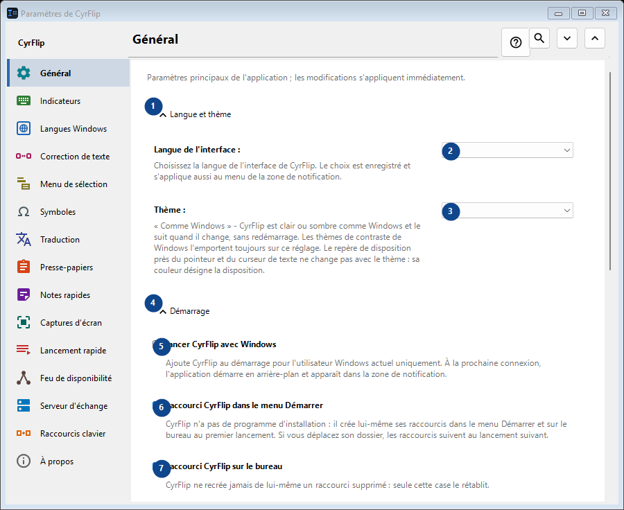
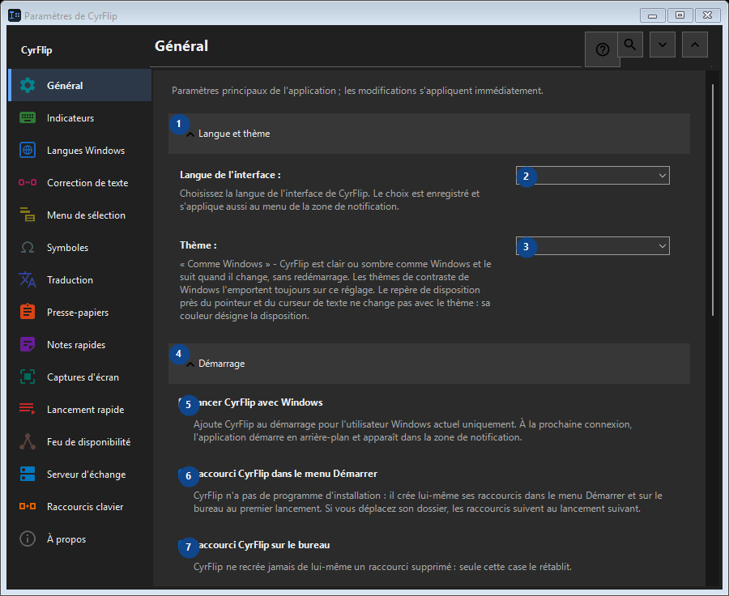

Paramètres de CyrFlip
À quoi cela sert
Paramètres principaux de l'application ; les modifications s'appliquent immédiatement.


Ordre des actions
Lisez les explications numérotées, choisissez les valeurs voulues, puis continuez avec la commande de la fenêtre.
Éléments
1. Langue et thème
Utilisez cette commande pour l’action indiquée. Lisez toute confirmation avant de l’accepter.
Vos raccourcis2. Langue de l'interface
Choisissez ou saisissez la valeur indiquée par le libellé voisin. Vérifiez-la avant de continuer.
Vos raccourcis3. Thème
Choisissez ou saisissez la valeur indiquée par le libellé voisin. Vérifiez-la avant de continuer.
Vos raccourcis4. Démarrage
Utilisez cette commande pour l’action indiquée. Lisez toute confirmation avant de l’accepter.
Vos raccourcis5. Lancer CyrFlip avec Windows
Ajoute CyrFlip au démarrage pour l'utilisateur Windows actuel uniquement. À la prochaine connexion, l'application démarre en arrière-plan et apparaît dans la zone de notification.
Vos raccourcis6. Raccourci CyrFlip dans le menu Démarrer
CyrFlip n'a pas de programme d'installation : il crée lui-même ses raccourcis dans le menu Démarrer et sur le bureau au premier lancement. Si vous déplacez son dossier, les raccourcis suivent au lancement suivant.
Vos raccourcis7. Raccourci CyrFlip sur le bureau
CyrFlip ne recrée jamais de lui-même un raccourci supprimé : seule cette case le rétablit.
Vos raccourcis8. Alimentation et écran
Utilisez cette commande pour l’action indiquée. Lisez toute confirmation avant de l’accepter.
Vos raccourcis9. Empêcher la mise en veille de l'ordinateur
Tant que l'option est active, Windows ne se met pas en veille ni en veille prolongée en cas d'inactivité — pratique pour les longs téléchargements, copies ou rendus. L'état est enregistré : un interrupteur laissé actif garde l'ordinateur éveillé même après un redémarrage - CyrFlip ne surveillera pas votre batterie à votre place.
Vos raccourcis10. Garder l'écran allumé (comme pour une vidéo)
L'écran ne s'éteint ni ne se verrouille en cas d'inactivité, comme pendant une vidéo. Cela n'annule pas le verrouillage par mot de passe (Win+L ou une stratégie de sécurité). L'état est enregistré : un interrupteur laissé actif garde l'écran allumé même après un redémarrage.
Vos raccourcis11. Transfert des paramètres
Utilisez cette commande pour l’action indiquée. Lisez toute confirmation avant de l’accepter.
Vos raccourcis12. Exporter les paramètres...
Utilisez cette commande pour l’action indiquée. Lisez toute confirmation avant de l’accepter.
Vos raccourcis13. Importer les paramètres...
Utilisez cette commande pour l’action indiquée. Lisez toute confirmation avant de l’accepter.
Vos raccourcis14. Restaurer les paramètres avant l'import...
Rien à restaurer pour l'instant : CyrFlip enregistre l'état d'origine juste avant la première modification. Cet élément est indisponible. Activez d’abord sa fonction ou sélectionnez une entrée.
Vos raccourcis15. Conserver une sauvegarde des paramètres dans Documents
Tant que c'est actif, CyrFlip garde une sauvegarde glissante de chaque paramètre dans Documents\CyrFlip\Backups - les trois plus récentes sont conservées. La sauvegarde survit à une réinstallation depuis Microsoft Store : une installation neuve la trouve et propose de la restaurer. Le fichier contient vos hôtes, vos sites et vos scénarios - gardez-le privé.
Vos raccourcis16. Ouvrir le dossier des sauvegardes
Les sauvegardes sont des fichiers de paramètres ordinaires, nommés par date. Ouvrez le dossier pour en copier une ou l'emporter sur un autre ordinateur.
Vos raccourcis